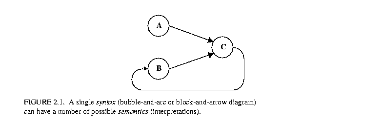
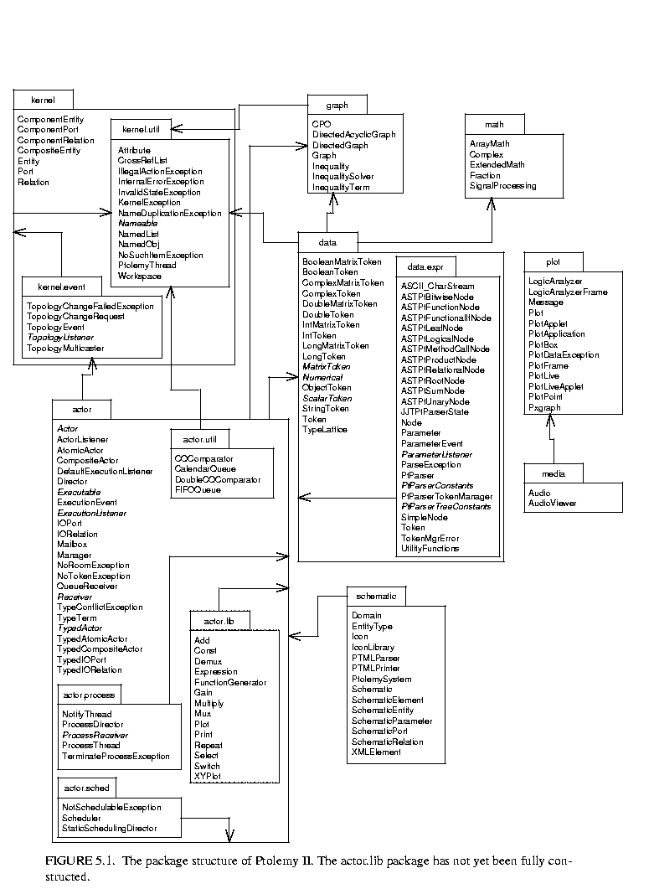
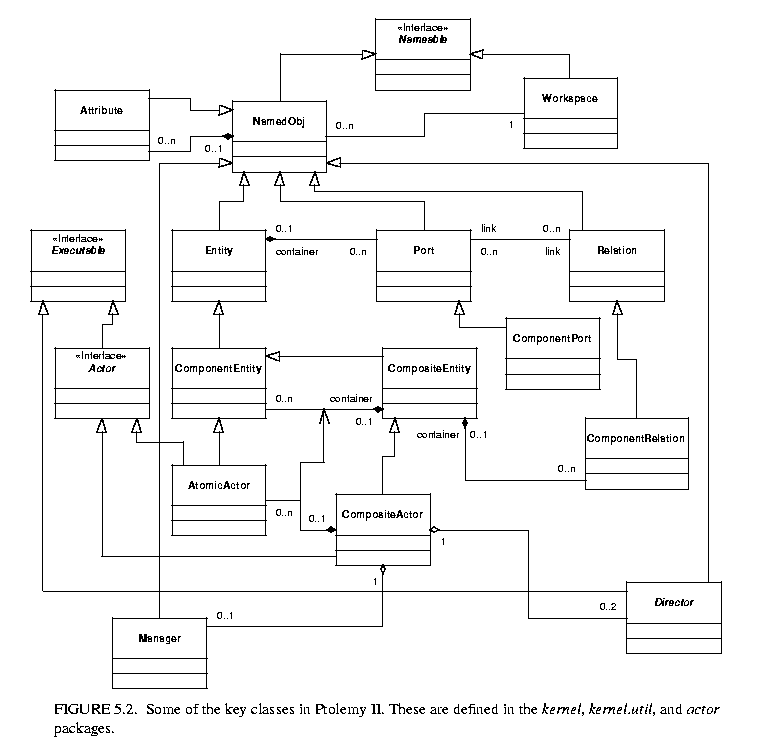

The Ptolemy project studies heterogeneous modeling and design of concurrent systems. The focus is on embedded systems, particularly those that mix technologies, including for example analog and digital electronics, hardware and software, and electronics and mechanical devices (including MEMS, microelectromechanical systems). The focus is also on systems that are complex in the sense that they mix widely different operations, such as signal processing, feedback control, sequential decision making, and user interfaces.
Modeling is the act of representing a system or subsystem formally. A model might be mathematical, in which case it can be viewed as a set of assertions about properties of the system such as its functionality or physical dimensions. A model can also be constructive, in which case it defines a computational procedure that mimics a set of properties of the system. Constructive models are often used to describe behavior of a system in response to stimulus from outside the system. Constructive models are also called executable models.
Design is the act of defining a system or subsystem. Usually this involves defining one or more models of the system and refining the models until the desired functionality is obtained within a set of constraints.
Design and modeling are obviously closely coupled. In some circumstances, models may be immutable, in the sense that they describe subsystems, constraints, or behaviors that are externally imposed on a design. For instance, they may describe a mechanical system that is not under design, but must be controlled by an electronic system that is under design.
Executable models are sometimes called simulations, an appropriate term when the executable model is clearly distinct from the system it models. However, in many electronic systems, a model that starts as a simulation mutates into a software implementation of the system. The distinction between the model and the system itself becomes blurred in this case. This is particularly true for embedded software.
Embedded software is software that resides in devices that are not first-and-foremost computers. It is pervasive, appearing in automobiles, telephones, pagers, consumer electronics, toys, aircraft, trains, security systems, weapons systems, printers, modems, copiers, thermostats, manufacturing systems, appliances, etc. A technically active person probably interacts regularly with more pieces of embedded software than conventional software.
A major emphasis in the Ptolemy project is on the methodology for defining and producing embedded software together with the systems within which it is embedded.
Executable models are constructed under a model of computation, which is the set of "laws of physics" that govern the interaction of components in the model. If the model is describing a mechanical system, then the model of computation may literally be the laws of physics. More commonly, however, it is a set of rules that are more abstract, and provide a framework within which a designer builds models. A set of rules that govern the interaction of components is called the semantics of the model of computation. A model of computation may have more than one semantics, in that there might be distinct sets of rules that impose identical constraints on behavior.
The choice of model of computation depends strongly on the type of model being constructed. For example, for a purely computational system that transforms a finite body of data into another finite body of data, the imperative semantics that is common in programming languages such as C, C++, Java, and Matlab will be adequate. For modeling a mechanical system, the semantics needs to be able to handle concurrency and the time continuum, in which case a continuous-time model of computation such that found in Simulink, Saber, Hewlett-Packard's ADS, and VHDL-AMS is more appropriate.
The ability of a model to mutate into an implementation depends heavily on the model of computation that is used. Some models of computation, for example, are suitable for implementation only in customized hardware, while others are poorly matched to customized hardware because of their intrinsically sequential nature. Choosing an inappropriate model of computation may compromise the quality of design by leading the designer into a more costly or less reliable implementation.
A principle of the Ptolemy project is that the choices of models of computation strongly affect the quality of a system design.
For embedded systems, the most useful models of computation handle concurrency and time. This is because embedded systems consist typically of components that operate simultaneously and have multiple simultaneous sources of stimuli. In addition, they operate in a timed (real world) environment, where the timeliness of their response to stimuli may be as important as the correctness of the response.
The objective in Ptolemy II is to support the construction and interoperability of executable models that are built under a wide variety of models of computation.
There are a rich variety of models of computation that deal with concurrency and time in different ways. In this section, we outline some of the most useful models for embedded systems. All of these will lend a semantics to the same bubble-and-arc, or block-and-arrow diagram shown in figure

2.1.One possible semantics for the syntax in figure 2.1 is that of differential equations. The arcs represent continuous functions of a continuum that is interpreted as time. The bubbles represent relations between these functions. The job of a simulator is to find a fixed-point, i.e., a set of functions that satisfy all the relations.
Differential equations are excellent for modeling analog circuits and many physical systems. This is the model of computation used in Simulink, Saber, and VHDL-AMS, and is closely related to that in Spice circuit simulators. However, they have disadvantages. Since they directly describe a physical system, they are tightly bound to an implementation, leaving few implementation options. Moreover, they are only applicable to relatively well-understood technologies, where lumped-parameter modeling is appropriate. They must be generalized to partial differential equations for less understood technologies, where solution techniques such as finite elements can be quite costly. For well-understood technologies, they can be expensive to simulate compared to digital representations of comparable functionality (and hence, they can be expensive to implement in software).
Embedded systems frequently contain components that are best modeled using differential equations, such as MEMS and other mechanical components, analog circuits, and microwave circuits. These components, however, interact with an electronic system that may serve as a controller or a recipient of sensor data. This electronic system may be digital, in which case there is a fundamental mismatch in models of computation. Joint modeling of a continuous subsystem with digital electronics is known as mixed signal modeling.
Differential equations can be discretized to get difference equations, a commonly used model of computation in digital signal processing. This model of computation can be further generalized to support multirate difference equations. In either case, a global clock defines the discrete points at which signals have values (at the ticks).
Difference equations are considerably easier to implement in software, and hence leave more freedom of implementation. Their key weaknesses are the global synchronization implied by the clock, and the awkwardness of specifying irregularly timed events and control logic.
The synchronous dataflow (SDF) domain in Ptolemy II is extended with a model of time to model difference equations. Dataflow models are discussed below in section 2.7.
In FSMs, bubbles represent system state and arcs represent state transitions. The simple FSM model of computation is not concurrent. Execution is a strictly ordered sequence of state transitions.
FSM models are excellent for control logic in embedded systems, particularly safety-critical systems. FSM models are amenable to in-depth formal analysis, and thus can be used to avoid surprising behavior. Moreover, FSMs are easily mapped to either hardware or software implementations.
FSM models have a number of key weaknesses. First, at a very fundamental level, they are not as expressive as the other models of computation described here. They are not sufficiently rich to describe all partially recursive functions. However, this weakness is acceptable in light of the formal analysis that becomes possible. Many questions about designs are decidable for FSMs and undecidable for other models of computation. A second key weakness is that the number of states can get very large even in the face of only modest complexity. This makes the models unwieldy.
The latter problem can often be solved by using FSMs in combination with concurrent models of computation. This was first noted by David Harel, who introduced that Statecharts formalism. Statecharts combine a loose version of synchronous-reactive modeling (described below) with FSMs [8]. FSMs have also been combined with differential equations, yielding the so-called hybrid systems model of computation [9].
A major (ongoing) result of the Ptolemy project has been to show that FSMs can be hierarchically combined with a huge variety of concurrent models of computation. We call the resulting formalism "*charts" (pronounced "starcharts") where the star represents a wildcard [7].
In the synchronous/reactive (SR) model of computation [1], the arcs represent data values that are aligned with global clock ticks. Thus, they are discrete signals, as with difference equations, but unlike difference equations, a signal need not have a value at every clock tick. The bubbles represent relations between input and output values at each tick, and are usually partial functions with certain technical restrictions to ensure determinacy. Examples of languages that use the SR model of computation include Esterel [3], Signal [2], Lustre [5], and Argos [16].
SR models are excellent for applications with concurrent and complex control logic. Because of the tight synchronization, safety-critical real-time applications are a good match. However, also because of the tight synchronization, some applications are overspecified in the SR model, limiting the implementation alternatives. Moreover, in most realizations, modularity is compromised by the need to seek a global fixed point at each clock tick.
In discrete-event (DE) models of computation, the arcs represent sets of events placed in time. An event consists of a value and time stamp. This model of computation is popular for specifying hardware and simulating telecommunications systems, and has been realized in a large number of simulation environments, simulation languages, and hardware description languages, including VHDL and Verilog. Unlike the SR model, there is no global clock tick, but like SR, differential equations, and difference equations, there is a globally consistent notion of time.
DE models are excellent descriptions of concurrent hardware, although increasingly the globally consistent notion of time is problematic. In particular, it over-specifies (or over-models) systems where maintaining such a globally consistent notion is difficult, including large VLSI chips with high clock rates. A key weakness is that it is relatively expensive to implement in software, as evidenced by the relatively slow simulators.
In synchronous message passing, processes communicate in atomic, instantaneous actions called rendezvous. If two processes are to communicate, and one reaches the point first at which it is ready to communicate, then it stalls until the other process is ready to communicate. "Atomic" means that the two processes are simultaneously involved in the exchange, and that the exchange is initiated and completed in a single uninterruptable step. Examples of rendezvous models include Hoare's communicating sequential processes (CSP) [11]and Milner's calculus of communicating systems (CCS) [19]. This model of computation has been realized in a number of concurrent programming languages, including Lotos and Occam.
Rendezvous models are particularly well-matched to applications where resource sharing is a key element, such as client-server database models and multitasking or multiplexing of hardware resources. A key weakness of rendezvous-based models is that maintaining determinacy can be difficult. Proponents of the approach, of course, cite the ability to model nondeterminacy as a key strength.
In asynchronous message passing, processes communicate by sending messages through channels that can buffer the messages. The sender of the message need not wait for the receiver to be ready to receive the message. There are several variants of this technique, but we focus on those that ensure determinate computation, namely Kahn process networks [12] and dataflow models.
In a process network (PN) model of computation, the arcs represent sequences of data values (tokens), and the bubbles represent functions that map input sequences into output sequences. Certain technical restrictions on these functions are necessary to ensure determinacy, meaning that the sequences are fully specified. Dataflow models, popular in signal processing, are a special case of process networks [14].
PN models are excellent for signal processing. They are loosely coupled, and hence relatively easy to parallelize or distribute. They can be implemented efficiently in both software and hardware, and hence leave implementation options open. A key weakness of PN models is that they are awkward for specifying control logic.
Several special cases of PN are useful in certain circumstances. Dataflow models construct processes of a process network as sequences of atomic actor firings. Synchronous dataflow (SDF) is a particularly restricted special case with the extremely useful property that deadlock and boundedness are decidable. Boolean dataflow (BDF) is a generalization that sometimes yields to deadlock and boundedness analysis, although fundamentally these questions are undecidable. Dynamic dataflow (DDF) uses only run-time analysis, and thus makes no attempt to statically answer questions about deadlock and boundedness. The general case, process networks (PN), is implemented in Ptolemy II using Java threads for the processes.
CSP and PN both involve threads that communicate via message passing, synchronously in the former case and asynchronously in the latter. Neither model intrinsically includes a notion of time, which can make it difficult to interoperate with models that do include a notion of time. In fact, message events are partially ordered, rather than totally ordered as they would be were they placed on a time line.
Both models of computation can be augmented with a notion of time to promote interoperability. Threads assume that time does not advance while they are active, but can advance when they stall on inputs, outputs, or explicitly indicate that time can advance. By this vehicle, additional constraints are imposed on the order of events, and determinate interoperability with timed models of computation becomes possible.
The rich variety of concurrent models of computation outlined in the previous section can be daunting to a designer faced with having to select them. Most designers today do not face this choice because they get exposed to only one or two. This is changing, however, as the level of abstraction and domain-specificity of design software both rise. We expect that sophisticated and highly visual user interfaces will be needed to enable designers to cope with this heterogeneity.
An essential difference between concurrent models of computation is their modeling of time. Some are very explicit by taking time to be a real number that advances uniformly, and placing events on a time line or evolving continuous signals along the time line. Others are more abstract and take time to be discrete. Others are still more abstract and take time to be merely a constraint imposed by causality. This latter interpretation results in time that is partially ordered, and explains much of the expressiveness in process networks and rendezvous-based models of computation. Partially ordered time provides a mathematical framework for formally analyzing and comparing models of computation [15].
A grand unified approach to modeling would seek a concurrent model of computation that serves all purposes. This could be accomplished by creating a melange, a mixture of all of the above, but such a mixture would be extremely complex and difficult to use, and synthesis and simulation tools would be difficult to design.
Another alternative would be to choose one concurrent model of computation, say the rendezvous model, and show that all the others are subsumed as special cases. This is relatively easy to do, in theory. Most of these models of computation are sufficiently expressive to be able to subsume most of the others. However, this fails to acknowledge the strengths and weaknesses of each model of computation. Differential equations, for instance, are very good at describing the interaction of point masses in a model of a MEMS system, but not as good at describing the discrete control logic that may be ultimately controlling the actuators in the MEMS system. Similarly, finite-state machines are good at modeling at least simple control logic, but hopelessly inadequate for modeling the interaction of point masses. Thus, to design interesting systems, designers need to use heterogeneous models.
Visual depictions of electronic systems have always held a strong human appeal, making them extremely effective in conveying information about a design. Many of the domains of interest in the Ptolemy project use such depictions to completely and formally specify models.
One of the principles of the Ptolemy project is that visual depictions of systems can help to offset the increased complexity that is introduced by heterogeneous modeling.
These visual depictions offer an alternative syntax to associate with the semantics of a model of computation. Visual syntaxes can be every bit as precise and complete as textual syntaxes, particularly when they are judiciously combined with textual syntaxes.
Visual representations of models have a mixed history. In circuit design, schematic diagrams used to be routinely used to capture all of the essential information needed to implement some systems. Schematics are often replaced today by text in hardware description languages such as VHDL or Verilog. In other contexts, visual representations have largely failed, for example flowcharts for capturing the behavior of software. Recently, a number of innovative visual formalisms have been garnering support, including visual dataflow, hierarchical concurrent finite state machines, and object models. The UML visual language for object modeling has been receiving a great deal of attention, and in fact is used fairly extensively in the design of Ptolemy II itself.
A subset of visual languages that are recognizable as "block diagrams" represent concurrent systems. There are many possible concurrency semantics (and many possible models of computation) associated with such diagrams. Formalizing the semantics is essential if these diagrams are to be used for system specification and design. Ptolemy II supports exploration of the possible concurrency semantics. A principle of the project is that the strengths and weaknesses of these alternatives make them complementary rather than competitive. Thus, interoperability of diverse models is essential.
Ptolemy II is a complete, from the ground up, redesign of the Ptolemy 0.x software environment [4], which supports heterogeneous modeling and design of concurrent systems. It offers a unified infrastructure for implementations of a number of models of computation. The overall architecture consists of a set of packages that provide generic support for all models of computation and a set of packages that provide more specialized support for particular models of computation. Examples of the former include packages that contain math libraries, graph algorithms, an interpreted expression language, signal plotters, and interfaces to media capabilities such as audio. Examples of the latter include packages that support clustered graph representations of models, packages that support executable models, and domains, which are packages that implement a particular model of computation.
The package structure is shown in figure 5.1

. This is a UML package diagram [22]. The name of each package is in the tab at the top of each box. Subpackages are contained within their parent package. Dependencies between packages are shown by dotted lines with arrow heads. For example, actor depends on kernel.event which depends on kernel which depends on kernel.util. Actor also depends on data and graph. The role of each package is explained below.Some of the key classes in Ptolemy II are shown in figure

5.2. This is a static structure diagram in UML (unified modeling language). The key syntactic elements are boxes, which represent classes, the hollow arrow, which indicates generalization, and other lines, which indicate association. Some lines have a small diamond, which indicates aggregation.Instances of all of the classes shown can have names; they all implement the Nameable interface. Most of the classes generalize NamedObj, which in addition to being nameable can have a list of attributes associated with it. Attributes themselves are instances of NamedObj.
Entity, Port, and Relation are three key classes that extend NamedObj. These classes define the primitives of the abstract syntax supported by Ptolemy II. They will be fully explained in the kernel chapter. ComponentPort, ComponentRelation, and ComponentEntity extend these classes by adding support for clustered graphs. CompositeEntity extends ComponentEntity and represents an aggregation of instances of ComponentEntity and ComponentRelation.
The Executable interface defines objects that can be executed. The Actor interface extends this with capability for transporting data through ports. AtomicActor and CompositeActor are concrete classes that implement this interface.
An executable Ptolemy II model consists of a top-level CompositeActor with an instance of Director and an instance of Manager associated with it. The manager provides overall control of the execution (starting, stopping, pausing). The director implements a semantics of a model of computation to govern the execution of actors contained by the CompositeActor.
Director is the base class for directors that implement models of computation. Each such director is associated with a domain. We have defined in Ptolemy II directors that implement continuous-time modeling (ODE solvers), process networks, synchronous dataflow, discrete-event modeling, and communicating sequential processes.
Ptolemy II is a second generation system. Its predecessor, Ptolemy 0.x, still has many active users and developers, and may continue to evolve for some time. Ptolemy II has a somewhat different emphasis, and through its use of Java, concurrency, and integration with the network, is aggressively experimental. Some of the major capabilities in Ptolemy II that we believe to be new technology in modeling and design environments include:
Capabilities that we anticipate making available in the future include:
[1] A.. Benveniste and G. Berry, "The Synchronous Approach to Reactive and Real-Time Systems," Proceedings of the IEEE, Vol. 79, No. 9, 1991, pp. 1270-1282.
[2] A. Benveniste and P. Le Guernic, "Hybrid Dynamical Systems Theory and the SIGNAL Language," IEEE Tr. on Automatic Control, Vol. 35, No. 5, pp. 525-546, May 1990.
[3] G. Berry and G. Gonthier, "The Esterel synchronous programming language: Design, semantics, implementation," Science of Computer Programming, 19(2):87-152, 1992.
[4] J. T. Buck, S. Ha, E. A. Lee, and D. G. Messerschmitt, "Ptolemy: A Framework for Simulating and Prototyping Heterogeneous Systems," Int. Journal of Computer Simulation, special issue on "Simulation Software Development," vol. 4, pp. 155-182, April, 1994. (http://ptolemy.eecs.berkeley.edu/papers/JEurSim).
[5] P. Caspi, D. Pilaud, N. Halbwachs, and J. A. Plaice, "LUSTRE: A Declarative Language for Programming Synchronous Systems," Conference Record of the 14th Annual ACM Symp. on Principles of Programming Languages, Munich, Germany, January, 1987.
[6] E. Gamma, R. Helm, R. Johnson, and J. Vlissides, Design Patterns: Elements of Reusable Object-Oriented Software, Addison-Wesley, Reading MA, 1995.
[7] A. Girault, B. Lee, and E. A. Lee, "Hierarchical Finite State Machines with Multiple Concurrency Models," April 13, 1998 (revised from Memorandum UCB/ERL M97/57, Electronics Research Laboratory, University of California, Berkeley, CA 94720, August 1997).
(http://ptolemy.eecs.berkeley.edu/papers/98/starcharts)
[8] D. Harel, "Statecharts: A Visual Formalism for Complex Systems," Sci. Comput. Program., vol 8, pp. 231-274, 1987.
[9] T. A. Henzinger, "The theory of hybrid automata," in Proceedings of the 11th Annual Symposium on Logic in Computer Science, IEEE Computer Society Press, 1996, pp. 278-292, invited tutorial.
[10] T.A. Henzinger, and O. Kupferman, and S. Qadeer, "From prehistoric to postmodern symbolic model checking," in CAV 98: Computer-aided Verification, pp. 195-206, eds. A.J. Hu and M.Y. Vardi, Lecture Notes in Computer Science 1427, Springer-Verlag, 1998.
[11] C. A. R. Hoare, "Communicating Sequential Processes," Communications of the ACM, Vol. 21, No. 8, August 1978.
[12] G. Kahn, "The Semantics of a Simple Language for Parallel Programming," Proc. of the IFIP Congress 74, North-Holland Publishing Co., 1974.
[13] D. Lea, Concurrent Programming in JavaTM, Addison-Wesley, Reading, MA, 1997.
[14] E. A. Lee and T. M. Parks, "Dataflow Process Networks,", Proceedings of the IEEE, vol. 83, no. 5, pp. 773-801, May, 1995. (http://ptolemy.eecs.berkeley.edu/papers/processNets)
[15] E. A. Lee and A. Sangiovanni-Vincentelli, "A Framework for Comparing Models of Computation,", March 12, 1998. (Revised from ERL Memorandum UCB/ERL M97/11, University of California, Berkeley, CA 94720, January 30, 1997).
(http://ptolemy.eecs.berkeley.edu/papers/98/framework/)
[16] F. Maraninchi, "The Argos Language: Graphical Representation of Automata and Description of Reactive Systems," in Proc. of the IEEE Workshop on Visual Languages, Kobe, Japan, Oct. 1991.
[17] S. McConnell, Code Complete: A Practical Handbook of Software Construction, Microsoft Press, 1993.
[18] B. Meyer, Object Oriented Software Construction, 2nd ed., Prentice Hall, 1997.
[19] R. Milner, Communication and Concurrency, Prentice-Hall, Englewood Cliffs, NJ, 1989.
[20] R. Milner, A Theory of Type Polymorphism in Programming, Journal of Computer and System Sciences 17, pp. 384-375, 1978.
[21] NASA Office of Safety and Mission Assurance, Software Formal Inspections Guidebook, August 1993 (http://satc.gsfc.nasa.gov/fi/gdb/fitext.txt).
[22] Rational Software Corporation, UML Notation Guide, Version 1.1, September 1997, http://www.rational.com/uml/html/notation/.
[23] A. J. Riel, Object Oriented Design Heuristics, Addison Wesley, 1996.
[24] J. Rowson and A. Sangiovanni-Vincentelli, "Interface Based Design," Proc. of DAC `97.
[25] J. Rumbaugh, et al. Object-Oriented Modeling and Design Prentice Hall, 1991.